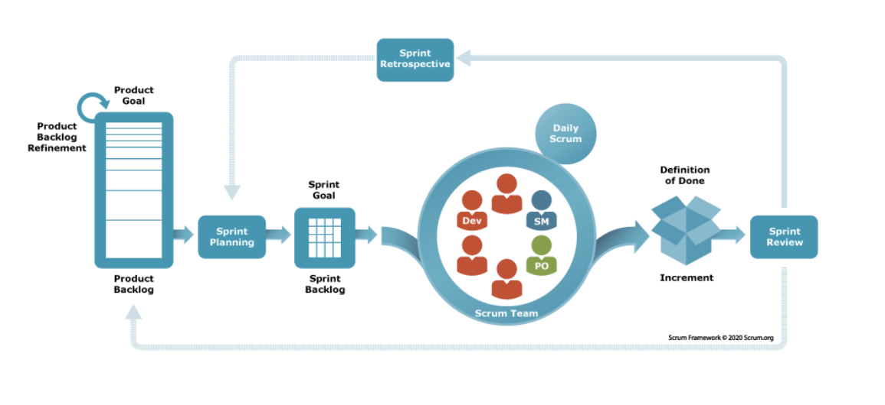
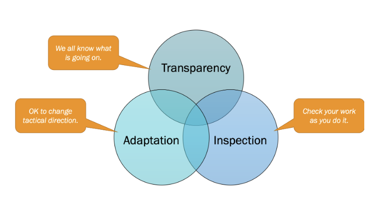
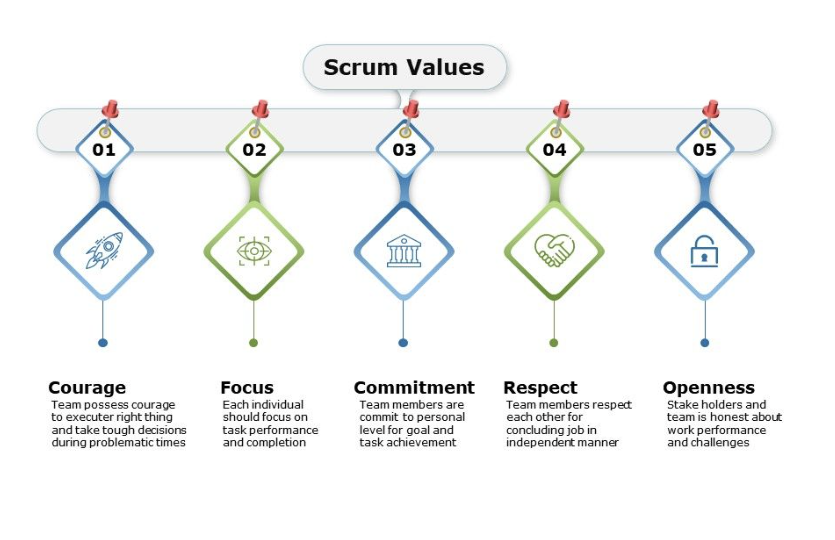

Welcome to Understanding Scrum: From Theory to Practice. This website explores the Scrum framework, how it helps teams manage complex work, and how its principles can support effective product delivery. You'll learn about Scrum accountabilities, events, artifacts, and how they work together in practice.

Scrum is a lightweight framework designed to help people, teams, and organizations generate value by solving complex problems. It is built on empiricism and lean thinking, allowing teams to learn from experience, make decisions based on observations, and continuously improve.
Organizations use Scrum to manage complex work, respond to changing business needs, and deliver value faster through short, iterative cycles called Sprints.
Scrum is built on empiricism, meaning decisions are based on experience, observation, and evidence. Its three pillars are:

Think of the three pillars as a continuous cycle of learning and improvement.
For example, imagine a team developing a mobile app. Everyone can see the team's progress and challenges (Transparency). During a Sprint Review, customer feedback reveals that a feature is confusing (Inspection). The team uses that feedback to adjust its priorities and improve the feature (Adaptation).
Why does this matter? Because in a world where customer needs and technology change quickly, organizations can't rely on assumptions alone. These three pillars help teams make informed decisions, respond to change, and continuously deliver better products.
The Scrum framework is built on five core values:
These values shape how Scrum Teams collaborate, make decisions, and overcome challenges.
While the three pillars guide how teams learn and adapt, the five values guide how people work together. They help build trust, encourage accountability, and create an environment where teams can continuously improve and deliver value.

A Scrum Team is a small, self-managing, cross-functional team working toward a shared Product Goal. Each member brings different skills and responsibilities, but everyone works together to deliver value.
Think of a Scrum Team like a flight crew. Each person plays a different role, but success depends on working together to reach the same destination.
Decides where the team needs to go and why. The Product Owner sets the product direction, prioritizes what matters most, and focuses on maximizing value.
Helps the crew work effectively. The Scrum Master coaches the team in Scrum, helps remove obstacles, and supports continuous improvement.
Turn the plan into reality. Developers use their combined skills to build, test, and deliver a usable product Increment every Sprint.
The Bottom Line: The Product Owner focuses on what brings value, the Scrum Master helps the team work effectively, and the Developers determine how to deliver it. All three accountabilities work together toward one shared Product Goal.
Scrum uses five events to create a consistent rhythm of planning, collaboration, feedback, and improvement. Each event serves a specific purpose, helping teams stay focused, inspect progress, and adapt when needed.
Think of a Sprint as a short journey with a clear destination. It's a fixed period of one month or less when the team works toward a Sprint Goal and creates a usable product Increment.
Example: Our team has two weeks to build a working restaurant menu feature.
Before getting started, the team agrees on why the Sprint matters, what they can accomplish, and how they'll approach the work.
Example: The team selects menu browsing as its priority and plans the work needed to deliver it.
A 15-minute event where Developers inspect progress toward the Sprint Goal and adapt their plan for the next day.
Example: The Developers discover that menu images aren't loading correctly and adjust their plan to address the issue.
The Scrum Team and stakeholders inspect what was accomplished and discuss what to do next.
Example: Restaurant owners try the menu feature and suggest adding dietary filters. The team considers this feedback for future work.
The Scrum Team reflects on how the Sprint went and identifies ways to improve quality and effectiveness.
Example: The team realizes that testing earlier would prevent last-minute problems, so they agree to improve their testing approach.
We've explored the people, events, and artifacts that make up Scrum. But how does it all come together in the real world?
Imagine a restaurant looking to improve its customer experience by developing a food-ordering app. From identifying customer needs and prioritizing features to overcoming challenges and gathering feedback, this case study follows a Scrum Team as it turns a business idea into a working product.
Want to explore Scrum further? These resources provide additional guidance on the framework, its principles, and practical application.